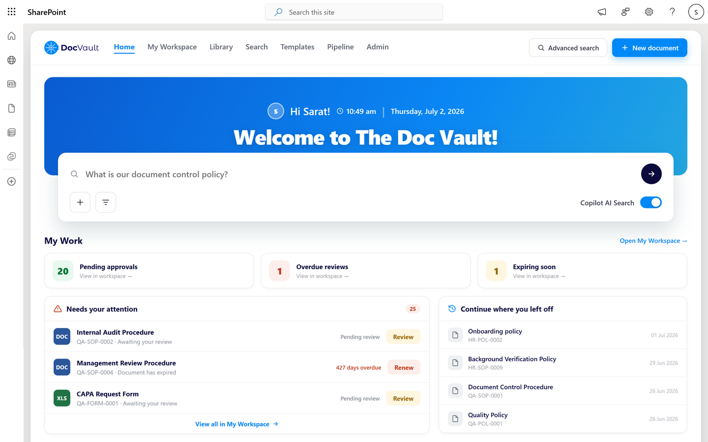
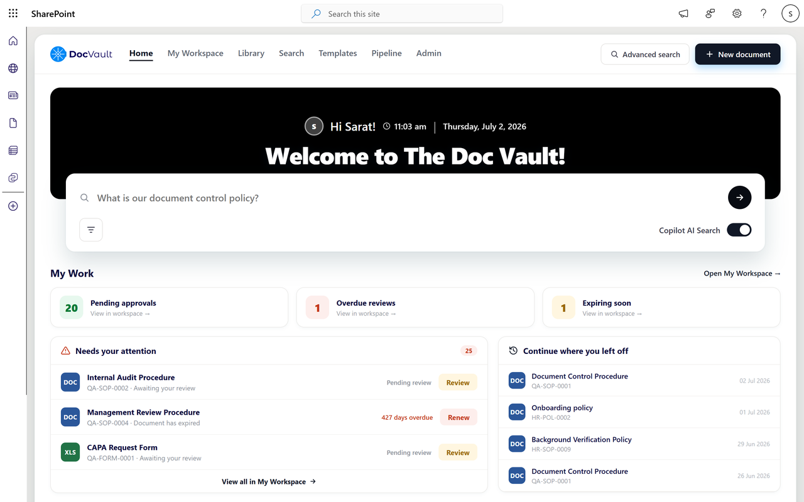

An AI-powered SharePoint Document Management System designed from scratch, end to end, from marketing landing page to full application UI.
1-3
Months to deliver
2
Products designed
4
User segments
6
Core pillars


DocVault AI is a SharePoint-native document management system built by SharePoint Designs to solve enterprise document chaos. I was the sole designer responsible for the entire product - from the marketing landing page and all its sections to the full application UI inside SharePoint. Designed everything from scratch over 1-3 months.
Role
Solo UI/UX Designer (End to End)
Timeline
1-3 Months · Full Product
Product Type
SaaS Web App + Landing Page
Tools
Figma · Webflow · SharePoint
Enterprise teams using Microsoft SharePoint struggle with document chaos - files scattered across folders, no version control, compliance nightmares, and hours wasted searching for the right document.
Employees spend 2+ hours per week searching for documents. SharePoint's native search is powerful but not intuitive for everyday users.
Without version control, audit trails, and permission management, every document is a potential compliance violation waiting to happen.
Teams use SharePoint, email attachments, and personal drives. No single source of truth - leading to duplicate files and outdated versions.
Google Drive and Dropbox lack enterprise compliance. M-Files is expensive and lives outside Microsoft 365. Companies need something native and affordable.
DocVault was designed for four distinct user types within an enterprise organisation. Each has different needs, pain points, and success metrics.
Day-to-day employees who need to find and use documents quickly without any technical knowledge.
Find and use documents quickly without technical knowledge.
Hours wasted searching, no clear folder structure, always on the wrong version.
Responsible for ensuring the organisation meets regulatory requirements across every document action.
Full audit trail, version control, permission management at a glance.
No visibility into who accessed what, manual compliance reporting, constant risk exposure.
Responsible for deploying and maintaining enterprise tools within the existing Microsoft ecosystem.
Easy deployment within Microsoft 365, no extra infrastructure.
Complex enterprise tools require separate systems outside Microsoft ecosystem.
General staff across all departments who interact with shared documents daily but aren't power users.
Access team documents quickly without understanding the folder structure deeply.
Can never find the right version, don't know who to ask, end up emailing colleagues for files that should be in SharePoint.
Before designing DocVault, I mapped what existing tools offered and where they failed enterprise SharePoint users.
| Feature | Google Drive | Dropbox | M-Files | DocVault AI |
|---|---|---|---|---|
| SharePoint native | ||||
| AI-powered search | ~ |
|||
| Full audit trail | ~ |
~ |
||
| Version control | ||||
| Permission management | ~ |
~ |
||
| Compliance reporting | ||||
| Microsoft 365 native | ||||
| Affordable pricing | ||||
| No extra infrastructure |
Designing DocVault presented 3 unique challenges that shaped every decision.
Compliance features are complex - audit trails, permissions, version history. The challenge was presenting this in a UI that feels clean, not overwhelming. Solution: progressive disclosure - simple view first, advanced controls only when needed.
Business users, compliance managers, IT managers, and everyday employees all have completely different mental models and daily workflows. One UI had to serve all four without confusing any of them. Solution: role-based dashboard views and contextual navigation that surfaces the right tools and information for each user type. Employees see documents relevant to their team, managers see compliance alerts, IT sees system health.
The landing page needed to explain a complex enterprise product clearly enough to drive sign-ups. Enterprise buyers are skeptical. Solution: lead with the pain point, follow with social proof, end with simple pricing. No jargon above the fold.
DocVault is built around 6 core pillars. Each pillar maps to a specific user pain point.
Centralised storage with intelligent folder structure, drag-and-drop upload, and bulk operations.
Every document change tracked automatically. One-click rollback to any previous version.
Role-based access control. Set permissions at folder or document level with full audit logging.
Automated approval flows, document routing, and notification triggers without any code.
Real-time audit trail. Every view, edit, download, and share logged with timestamp and user identity.
Natural language search across all documents. Find anything in seconds, not hours of browsing.
I mapped 3 primary user flows before designing any screens. These became the backbone of the entire application architecture.
The DocVault landing page had one job - convert enterprise decision makers into trial sign-ups. I structured it around a clear persuasion hierarchy.
"Your company's documents, finally under control." - Speaks directly to the frustration before introducing the solution.
Immediately addressed all three user types so every visitor sees themselves in the product.
Demonstrated real workflows with annotated UI screenshots rather than generic feature lists. Enterprise buyers need to see the product working.
Positioned DocVault as a complete system rather than a collection of features. Each pillar maps to a specific pain point.
A dedicated section addressing compliance directly - the biggest fear of enterprise compliance managers.
Directly answered the objection every buyer has. Side by side comparison with real data, not marketing claims.
G2, Capterra, and Gartner badges with real customer quotes. Enterprise buyers buy on trust, not features.
Simple monthly and one-time options. Removed pricing anxiety with a clear, no-surprise structure.
These decisions were intentional and grounded in user behaviour and enterprise UX principles.
DocVault lives inside SharePoint so it had to feel native. I followed Microsoft Fluent design tokens while layering DocVault's brand identity on top. Users feel at home from day one.
Compliance features are complex. Showing everything at once overwhelms users. Simple view by default, advanced controls one click away.
Three different users, three different dashboards. Business users see recent documents. Compliance managers see audit alerts. IT managers see system health.
With a growing user base, these next-phase features would deepen DocVault's product value and expand into new market segments.
Automatically extract key clauses, dates, and parties from contracts. Flag risk areas and expiring agreements.
Allow firms to manage documents for multiple client organisations from one DocVault instance.
Native iOS and Android companion for document approvals and notifications. Full offline access to pinned docs.
Document usage analytics - most accessed files, storage trends, user activity patterns, compliance risk scoring.
DocVault was my most complex design challenge to date - a real product, real stakeholders, real business goals.
Enterprise users have deeply ingrained habits. DocVault had to feel familiar enough to adopt immediately but powerful enough to replace existing chaos.
I treated the landing page as a conversion product with a clear user journey, objection handling, and CTAs at every scroll depth.
Business users measure time-to-find. Compliance managers measure coverage. IT managers measure deployment time. I should have defined these upfront.
I'd run at least 3 user interviews per user type before finalising the IA. Enterprise users have specific workflows that are hard to guess from the outside.
Hiring for something complex? Tell me what your team is trying to fix. I read every message.
Looking for a full-time product or enterprise design role, especially one with the messy, unglamorous problems in it.